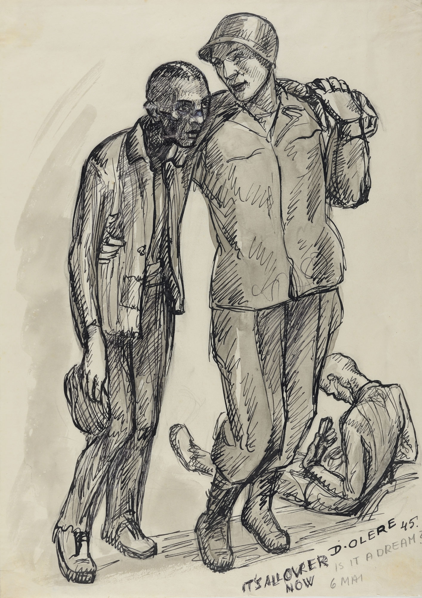

ESSENTIAL QUESTIONHow did WWII become the deadliest conflict in human history?
On June 6, 1944, nineteen-year-old J.D. Salinger waded ashore at Utah Beach in Normandy, France. He was a soldier in the 4th Infantry Division. By the end of that single day, more than 4,400 Allied soldiers were dead. Salinger survived, later wrote one of the most famous novels in American history, and carried the war for the rest of his life.
On June 6, 1944, nineteen-year-old J.D. Salinger landed at Utah Beach in Normandy, France. He was a soldier. By the end of that day, more than 4,400 Allied soldiers were dead. Salinger survived and later became a famous writer. He carried the war for the rest of his life.
World War II was fought on land, at sea, and in the air across Europe, Africa, Asia, and the Pacific. It killed an estimated 70 to 85 million people. Most were civilians. Inside that larger war, Nazi Germany carried out the Holocaust: the systematic murder of six million Jewish people and millions of others.
World War II was fought across Europe, Africa, Asia, and the Pacific. It killed about 70 to 85 million people. Most were civilians. During the war, Nazi Germany carried out the Holocaust. Nazis murdered six million Jewish people and millions of others.
CHAPTER ONE
A TOTAL WAR WITH TWO SIDES
World War II became a total warA war that uses a whole society's people, money, and industry.. Governments drafted soldiers, rationed food, built weapons, censored information, bombed cities, and asked civilians to sacrifice. This was not a war fought only by armies. Entire societies were pulled into it.
World War II became a total war. Governments drafted soldiers, rationed food, built weapons, and bombed cities. Civilians had to sacrifice. This was not only a war between armies. Whole societies were pulled into it.
The main sides were the Allied powersCountries that fought together against Germany, Italy, and Japan. and the Axis powers. Britain, the Soviet Union, the United States, China, and Free France fought for the Allies. Germany, Italy, and Japan led the Axis. The Axis wanted empire through conquest. The Allies fought to stop them, though each Allied country had its own goals and fears.
The main sides were the Allied powers and the Axis powers. Britain, the Soviet Union, the United States, China, and Free France fought for the Allies. Germany, Italy, and Japan led the Axis. The Axis wanted empire through conquest. The Allies fought to stop them.
ALLIED LEADERS
WINSTON CHURCHILL
Britain: refused to negotiate with Hitler in 1940.
FRANKLIN ROOSEVELT
United States: led the country after Pearl Harbor.
JOSEPH STALIN
Soviet Union: led the bloodiest front of the war.
AXIS LEADERS
ADOLF HITLER
Germany: ordered the Holocaust and invaded the Soviet Union.
BENITO MUSSOLINI
Italy: allied Italy with Nazi Germany.
EMPEROR HIROHITO
Japan: led Japan's Pacific empire during the war.
The war spread because each victory created a new crisis. Germany conquered much of Europe. Japan attacked across Asia and the Pacific. The Soviet Union lost millions after Germany invaded in 1941. The United States entered after Pearl Harbor. By 1942, the war had become a global fight over survival, empire, and mass violence.
The war spread because each victory created a new crisis. Germany conquered much of Europe. Japan attacked across Asia and the Pacific. Germany invaded the Soviet Union in 1941. The United States entered after Pearl Harbor. By 1942, the war was global.
DID YOU KNOW
J.D. Salinger survived D-Day before becoming a famous novelist.
J.D. Salinger landed at Normandy carrying chapters of a novel in his pack. He later fought through some of the worst combat in Europe and helped liberate a concentration camp. One of America's most famous teenage voices was written by a man who had seen the war up close and never really left it behind.
FAST FACTS
70M+PEOPLE KILLED
6MJEWISH VICTIMS
156KD-DAY TROOPS
27MSOVIET DEAD
2ATOMIC BOMBS
CHAPTER TWO
TURNING POINTS: THE WAR STARTS TO CHANGE
From 1939 to 1942, the Axis powers won almost everywhere. Germany dominated Europe. Japan swept across Asia and the Pacific. Then the war began to turn. A turning pointA battle or event that changes who has the advantage. does not end a war by itself. It changes the direction of the war.
From 1939 to 1942, the Axis powers won in many places. Germany dominated Europe. Japan swept across Asia and the Pacific. Then the war began to turn. A turning point does not end a war. It changes the direction of the war.
1942
BATTLE OF MIDWAY
The U.S. Navy destroyed four Japanese aircraft carriers. Japan never fully recovered its naval power.
1942-43
STALINGRAD
The Soviet Union trapped and defeated the German 6th Army after months of street fighting.
1944
D-DAY
More than 156,000 Allied troops landed in Normandy and opened a western front against Germany.
1944-45
ISLAND-HOPPING
U.S. forces captured key Pacific islands and moved closer to Japan.
Soviet soldiers advance through the ruins of Stalingrad, winter 1942-1943. Bundesarchiv / Wikimedia Commons.
Stalingrad showed why World War II became so deadly. German and Soviet soldiers fought building by building. Civilians were trapped in the city. Hunger, cold, bombing, and street combat killed on a massive scale. Germany lost an entire army, and the Soviet Union began pushing west toward Berlin.
Stalingrad showed why WWII was so deadly. German and Soviet soldiers fought building by building. Civilians were trapped. Hunger, cold, bombing, and street fighting killed many people. Germany lost an entire army. The Soviet Union began pushing west.
PRIMARY SOURCE
"You are about to embark upon the Great Crusade... The eyes of the world are upon you."
General Dwight D. Eisenhower, Order of the Day, June 6, 1944
Eisenhower gave this message to Allied forces on D-Day to frame the invasion as a fight for the future of Europe.
American troops wade ashore from landing craft at Normandy, June 6, 1944. U.S. Army Signal Corps / Wikimedia Commons.CHAPTER THREE
THE HOLOCAUST: MURDER BY SYSTEM
While armies fought across the world, Nazi Germany carried out the HolocaustThe Nazi murder of six million Jewish people and millions of others.. The Nazis targeted Jewish people above all others. They also murdered Roma people, disabled people, LGBTQ people, political opponents, Soviet prisoners of war, and others they called enemies or "inferior."
While armies fought, Nazi Germany carried out the Holocaust. Nazis targeted Jewish people most of all. They also murdered Roma people, disabled people, LGBTQ people, political opponents, Soviet prisoners of war, and others.
The Holocaust did not begin with death camps. It began with laws, propaganda, and the slow removal of rights. The Nazis took away Jewish citizenship, jobs, businesses, and legal protections. This dehumanization made later violence easier. Step by step, discrimination became genocideThe organized attempt to destroy an entire group of people..
The Holocaust did not begin with death camps. It began with laws and propaganda. Nazis took away Jewish citizenship, jobs, businesses, and rights. This made later violence easier. Step by step, discrimination became genocide.
1935
Nuremberg Laws strip Jewish Germans of citizenship and basic rights.
1938
Kristallnacht destroys synagogues, homes, and businesses. About 30,000 Jewish men are arrested.
1941
Einsatzgruppen follow German armies east and shoot Jewish communities in mass killings.
1942
The Final SolutionThe Nazi plan to murder Europe's Jewish population. is organized at the Wannsee Conference.
1945
Allied forces liberate the camps and discover the full scale of Nazi crimes.
The entrance gate of Auschwitz concentration camp. More than 1.1 million people were murdered at Auschwitz alone. Wikimedia Commons.
The Holocaust required a modern system. Train schedules moved people to camps. Bureaucrats processed paperwork. Guards followed orders. Neighbors reported families in hiding. The killing happened because leaders ordered it, but also because thousands of ordinary people helped the system work or chose to look away.
The Holocaust used a modern system. Train schedules moved people to camps. Bureaucrats handled paperwork. Guards followed orders. Neighbors reported families in hiding. Leaders ordered the killing. Many ordinary people helped the system or looked away.
ART SPOTLIGHT

HOLOCAUST SURVIVOR ARTWORK OR LIBERATION DRAWING. WIKIMEDIA COMMONS.
Some survivors drew what they had seen before they could explain it in full sentences. The paper was not just art material; it became memory storage. A sketch could hold faces, uniforms, fences, and fear when words felt too small for what had happened.
CHAPTER FOUR
VICTORY, ATOMIC BOMBS, AND A BROKEN WORLD
By early 1945, Germany was collapsing. Soviet forces pushed from the east while American, British, and French forces pushed from the west. Hitler killed himself in Berlin on April 30, 1945. Germany surrendered on May 8. Europe called it V-E Day: Victory in Europe.
By early 1945, Germany was collapsing. Soviet forces came from the east. American, British, and French forces came from the west. Hitler killed himself on April 30, 1945. Germany surrendered on May 8. Europe called it V-E Day.
V-E Day celebrations, May 8, 1945. Wikimedia Commons.Atomic bomb mushroom cloud over Hiroshima, August 6, 1945. U.S. Army Air Forces / Wikimedia Commons.
Japan did not surrender after Germany fell. American leaders expected a land invasion of Japan to be extremely deadly. President Harry Truman chose to use a new weapon: the atomic bomb. The United States dropped one bomb on Hiroshima on August 6, 1945, and another on Nagasaki on August 9. Japan surrendered on September 2, 1945.
Japan did not surrender after Germany fell. American leaders thought invading Japan would be extremely deadly. President Truman chose to use the atomic bomb. The United States dropped one bomb on Hiroshima and another on Nagasaki. Japan surrendered on September 2, 1945.
The war ended, but it left a new world behind. The United Nations formed to prevent another world war. Nazi leaders faced trial at Nuremberg. The word genocide entered international law. The United States and Soviet Union became the two dominant powers. The Cold War began almost immediately.
The war ended, but it left a new world behind. The United Nations formed to prevent another world war. Nazi leaders faced trial at Nuremberg. The word genocide became part of international law. The United States and Soviet Union became the two strongest powers. The Cold War began.
Real-world connection: WWII changed international law, nuclear weapons, human rights, and the way the world talks about genocide.
Real-world connection: WWII changed international law, nuclear weapons, human rights, and the meaning of genocide.
PRIMARY SOURCE
PRIMARY SOURCE MOMENT
PRIMARY SOURCE A
"Never shall I forget that night, the first night in camp, which has turned my life into one long night."
Elie Wiesel, Night, 1960
Wiesel was fifteen when he arrived at Auschwitz. His words show how genocide destroys a person's sense of safety, faith, and time.
PRIMARY SOURCE B
"The wrongs which we seek to condemn and punish have been so calculated, so malignant, and so devastating that civilization cannot tolerate their being ignored."
Robert H. Jackson, opening statement at the Nuremberg Trials, November 21, 1945
Jackson argued that Nazi crimes had to be judged in public because ignoring them would endanger civilization itself.
QUESTION 1: What does Wiesel's quote show that a death count alone cannot show?
QUESTION 2: How do both sources help explain why WWII changed the way the world thinks about human rights?
THEN AND NOW
WWII ENDED IN 1945, BUT THE WORLD STILL LIVES INSIDE THE SYSTEMS CREATED TO PREVENT IT FROM HAPPENING AGAIN.
1945
After WWII, Nazi leaders were tried for war crimes and crimes against humanity.
TODAY
The United Nations was created after WWII to help prevent another world war.
One room shows defendants facing judgment; the other shows countries arguing before war begins. Both rooms exist because the world saw what happened when aggression and genocide were ignored too long.